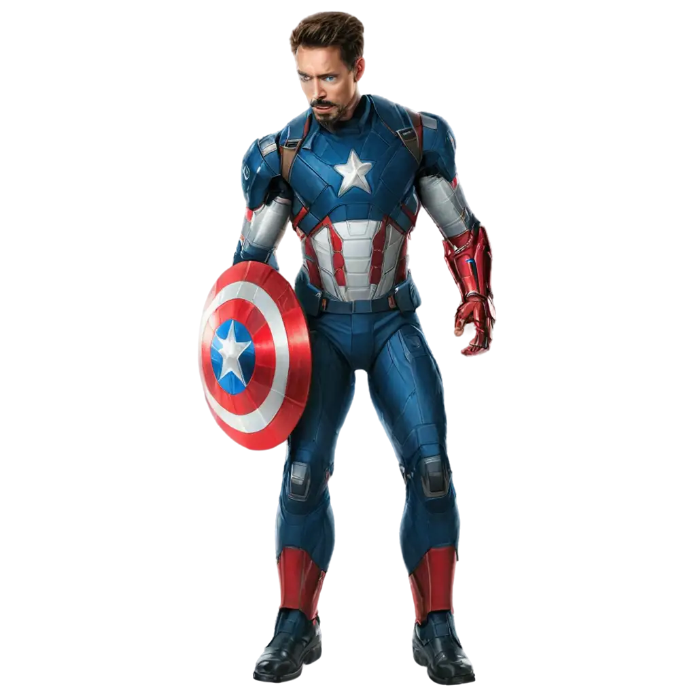

ADVENTURE
ADVENTURE TIME !
⇒ Adventure Time is a popular animated series set in the magical Land of Ooo. It follows the adventures of Finn, a brave human boy, and Jake, his magical shape-shifting dog. Together they explore different kingdoms, help people, and fight strange enemies. The show is full of humor, fantasy, and exciting adventures. Characters like Princess Bubblegum, Ice King, and Marceline make the story more interesting. The series teaches important lessons about friendship, courage, and kindness while keeping the story fun and imaginative.
⇒ Adventure Time is loved by audiences because it combines comedy with deep emotional storytelling. The characters grow and learn from their experiences, showing that everyone makes mistakes and improves with time. The colorful animation and creative world make every episode unique. Music and meaningful messages add depth to the show. It encourages viewers to be brave, caring, and creative. Because of its originality and strong themes, Adventure Time remains one of the most memorable animated shows.
BIKING
⇒ Biking is a popular outdoor activity that people enjoy for fun, fitness, and travel. It helps improve physical health by strengthening muscles and increasing stamina. Riding a bicycle allows individuals to explore parks, roads, and natural surroundings while enjoying fresh air. Biking is also an eco-friendly mode of transportation that reduces pollution. Many people participate in mountain biking and long-distance cycling for adventure. It builds confidence, balance, and coordination. Overall, biking is a healthy and enjoyable activity for people of all ages.
⇒ Biking is an enjoyable outdoor activity that promotes health and fitness. It helps strengthen muscles, improve stamina, and maintain a healthy lifestyle. People ride bicycles for exercise, travel, and adventure. Biking also allows individuals to explore nature and enjoy fresh air. It is an eco-friendly activity that reduces pollution and traffic. With regular practice, biking improves balance and coordination. It is a simple yet exciting activity suitable for all age groups.
PARA GLIDING
⇒ Paragliding is an exciting adventure sport in which a person flies in the air using a lightweight parachute. It gives a thrilling feeling of freedom while floating above mountains and landscapes. Pilots control direction and speed using special lines attached to the wing. Proper training and safety equipment are important before trying paragliding. The experience offers breathtaking aerial views and a sense of peace in the sky. Many tourists try paragliding to overcome fear and enjoy adventure. It is both exciting and unforgettable.
⇒ Paragliding is a thrilling air sport where a person flies using a lightweight parachute-like wing. It offers a unique experience of floating in the sky while enjoying beautiful landscapes below. Proper training and safety equipment are essential for safe flying. The sport requires courage and focus to control direction and landing. Many adventure lovers try paragliding to experience freedom and excitement. It provides unforgettable memories and breathtaking views from high altitudes.
SURFING
⇒ Surfing is a water sport where a person rides ocean waves using a surfboard. It requires balance, timing, and practice to move smoothly with the waves. Surfers wait for the right wave and then glide across the water with skill and control. This sport improves physical strength and coordination. Surfing is popular in coastal areas and attracts adventure lovers worldwide. It also helps people connect with nature and enjoy the ocean environment. Surfing is thrilling, refreshing, and full of energy.
⇒ Surfing is an adventurous water sport in which a person rides ocean waves on a surfboard. It requires balance, strength, and good timing to move smoothly with the waves. Surfers enjoy the thrill of the sea while improving their physical fitness. The sport is popular in coastal regions and attracts tourists worldwide. Surfing also teaches patience and connection with nature. It is both challenging and refreshing, making it a favorite adventure activity.